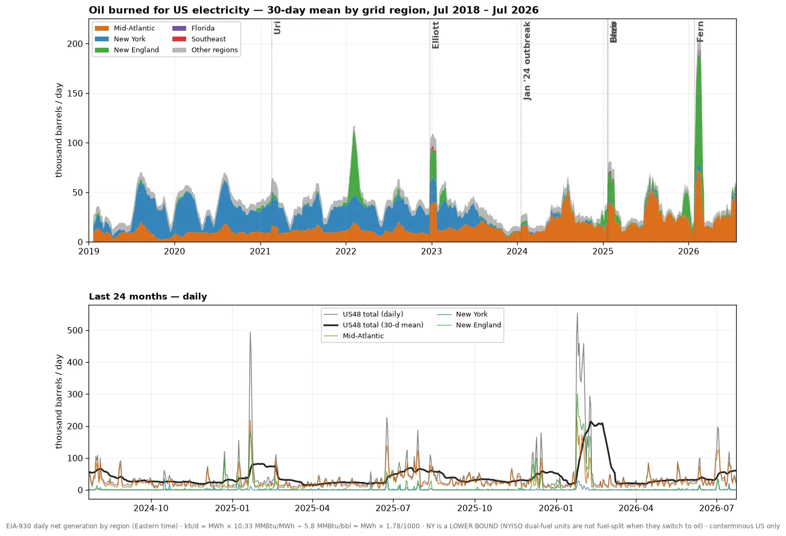
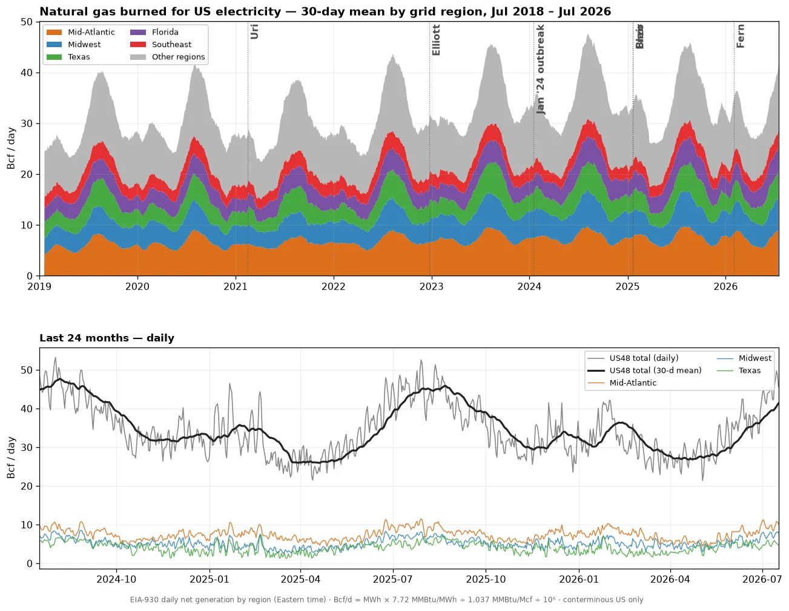
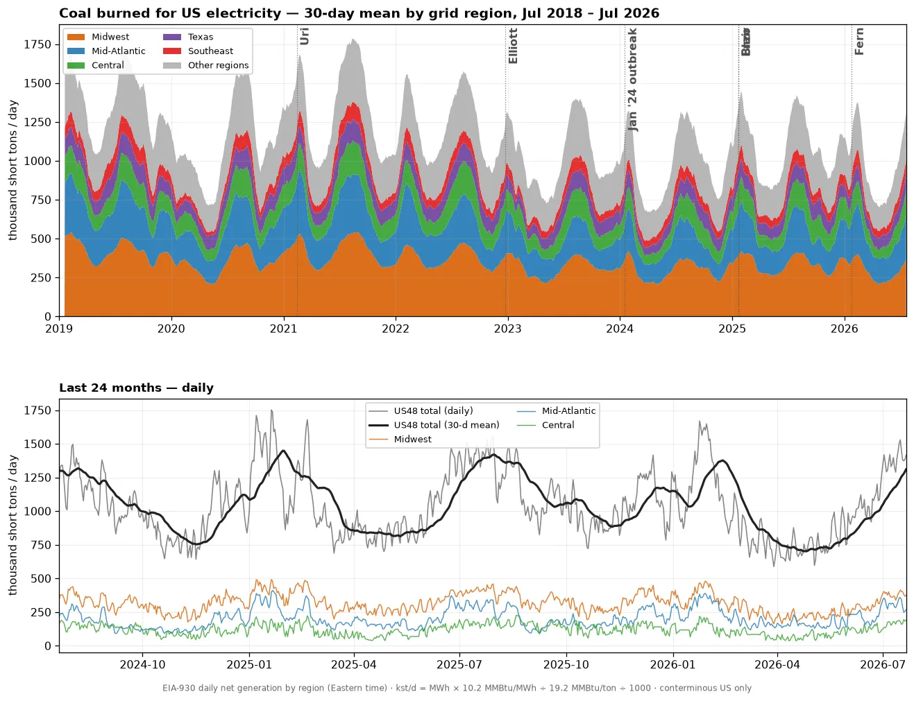
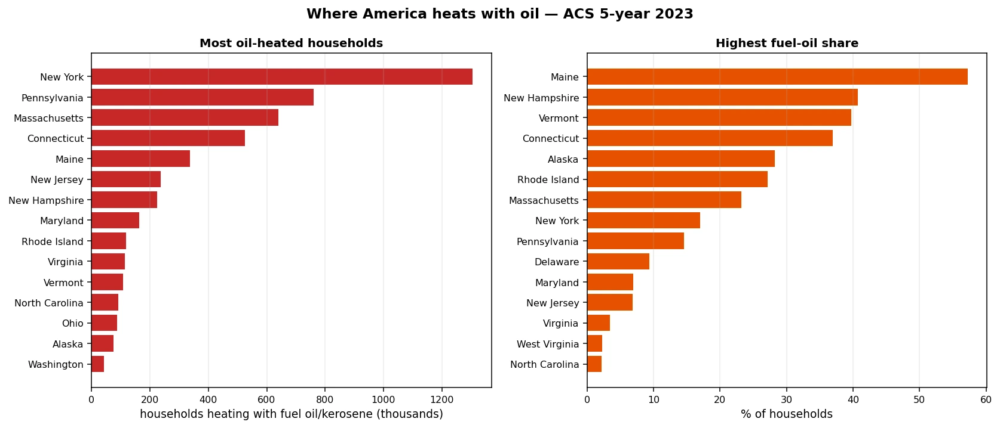

Fossil Fuel Burn for US Electricity
Daily oil, gas and coal burn for US power by grid region, from EIA-930 fuel-mix data. Conversion conventions are printed on each chart.
Interactive: Fuel Mix Since 2001 & Daily Fossil Burn
Monthly US generation share by fuel since 2001, and daily oil/gas/coal burn since 2018 with named winter storms. Hover, zoom, drag the range slider.
Oil Burned for Electricity — Thousand Barrels per Day
EIA-930 daily petroleum generation by grid region, as implied barrels burned.

Natural Gas Burned for Electricity — Bcf per Day
EIA-930 daily natural-gas generation by grid region, as implied gas burn.

Coal Burned for Electricity — Thousand Short Tons per Day
EIA-930 daily coal generation by grid region, as implied tons burned.

Where America Heats with Oil
Foundation of a heating-oil demand model: households heating with fuel oil or kerosene by county (ACS 5-year). 5.2 million households — 4% of the US — overwhelmingly in the Northeast: Maine heats 57% of homes with oil. Next step: weight these households by daily heating-degree-days for a live burn index.
